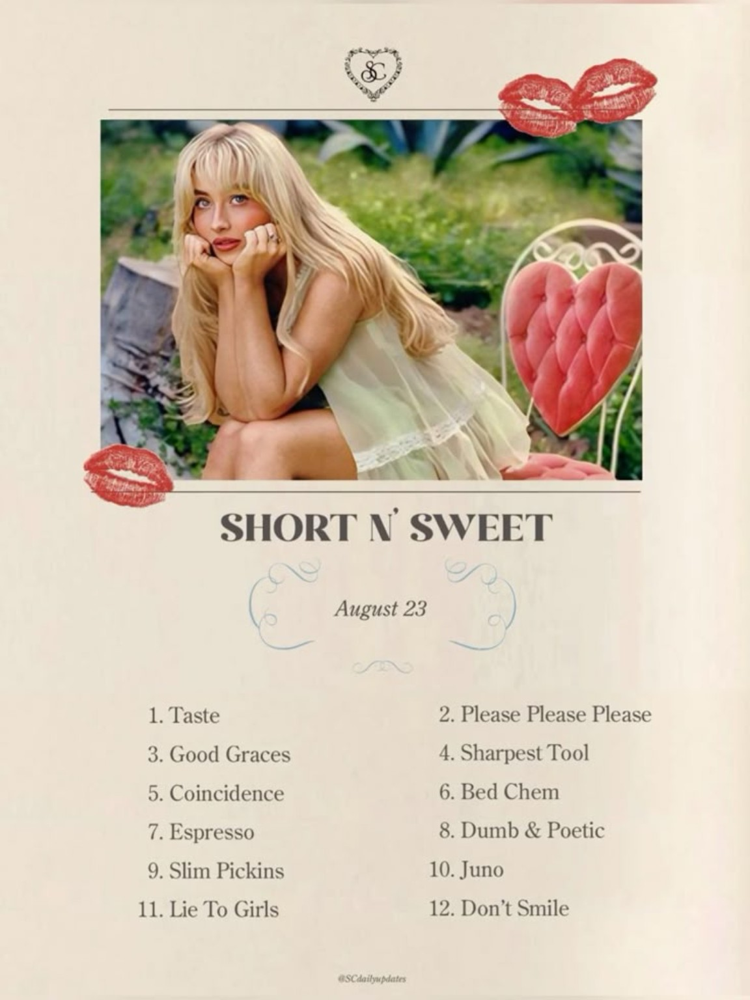
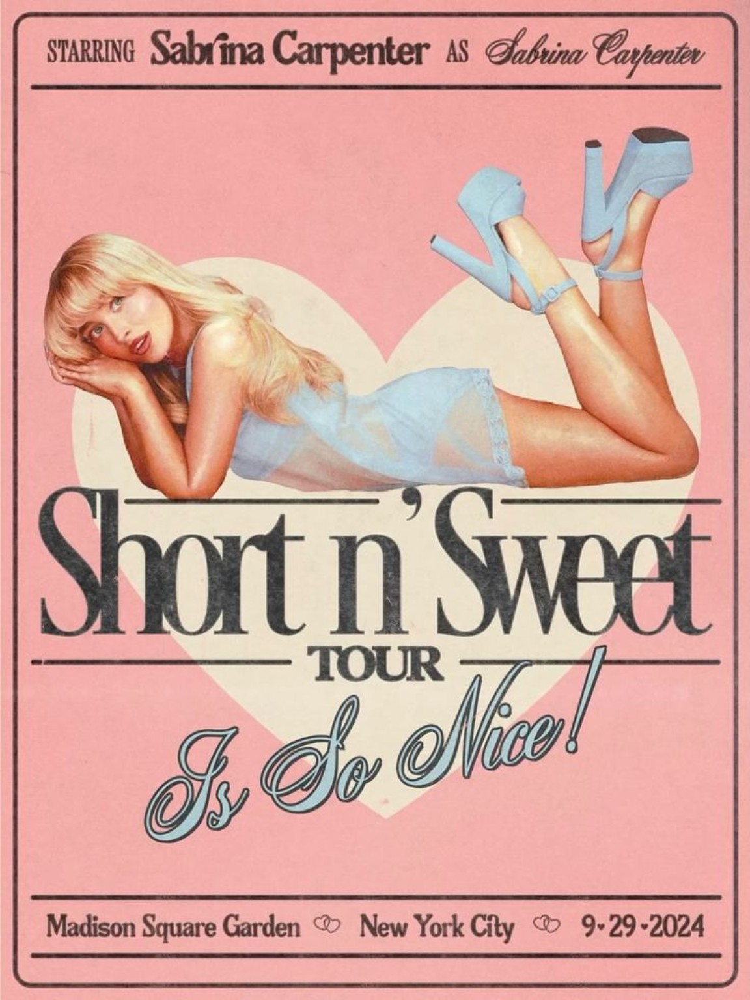
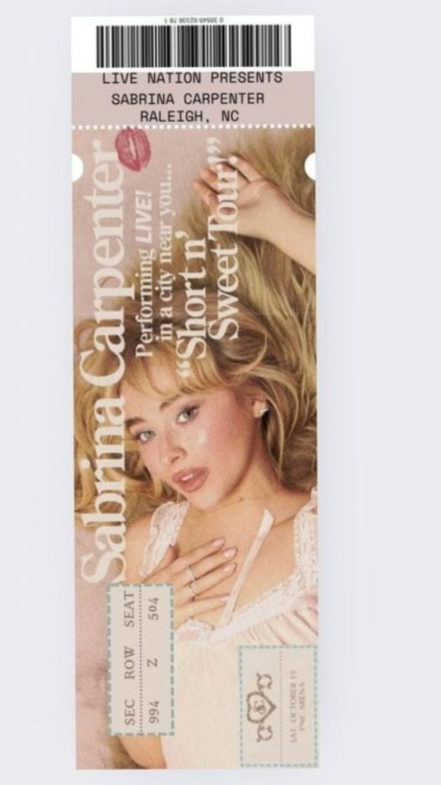
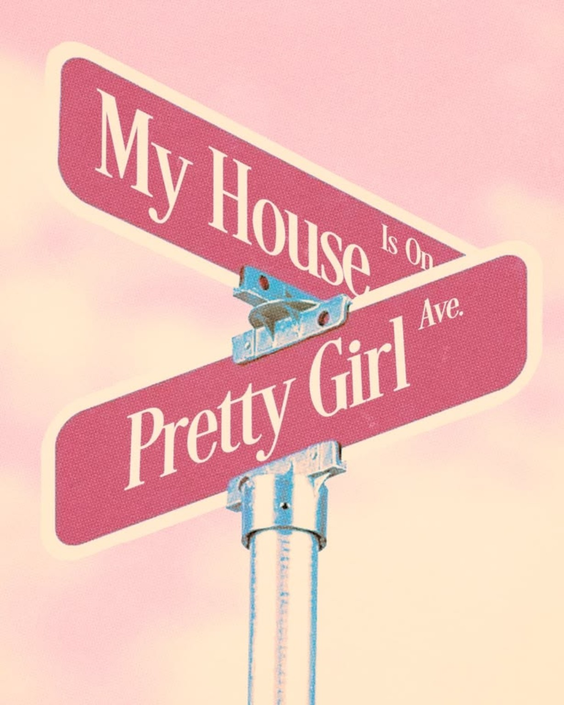
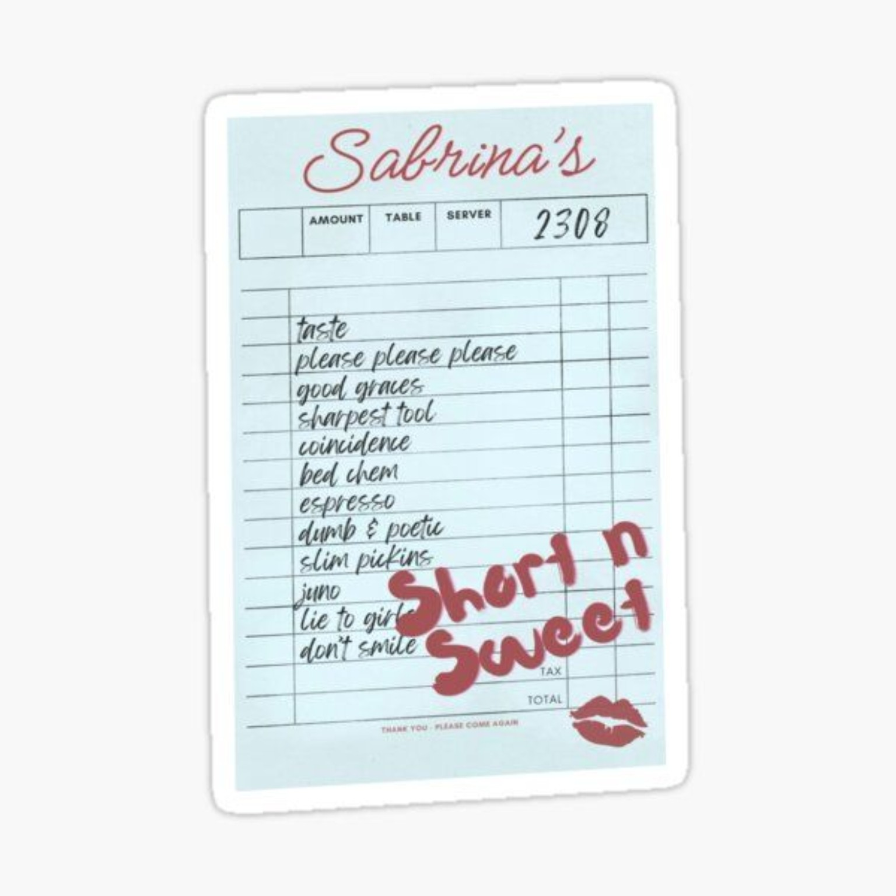
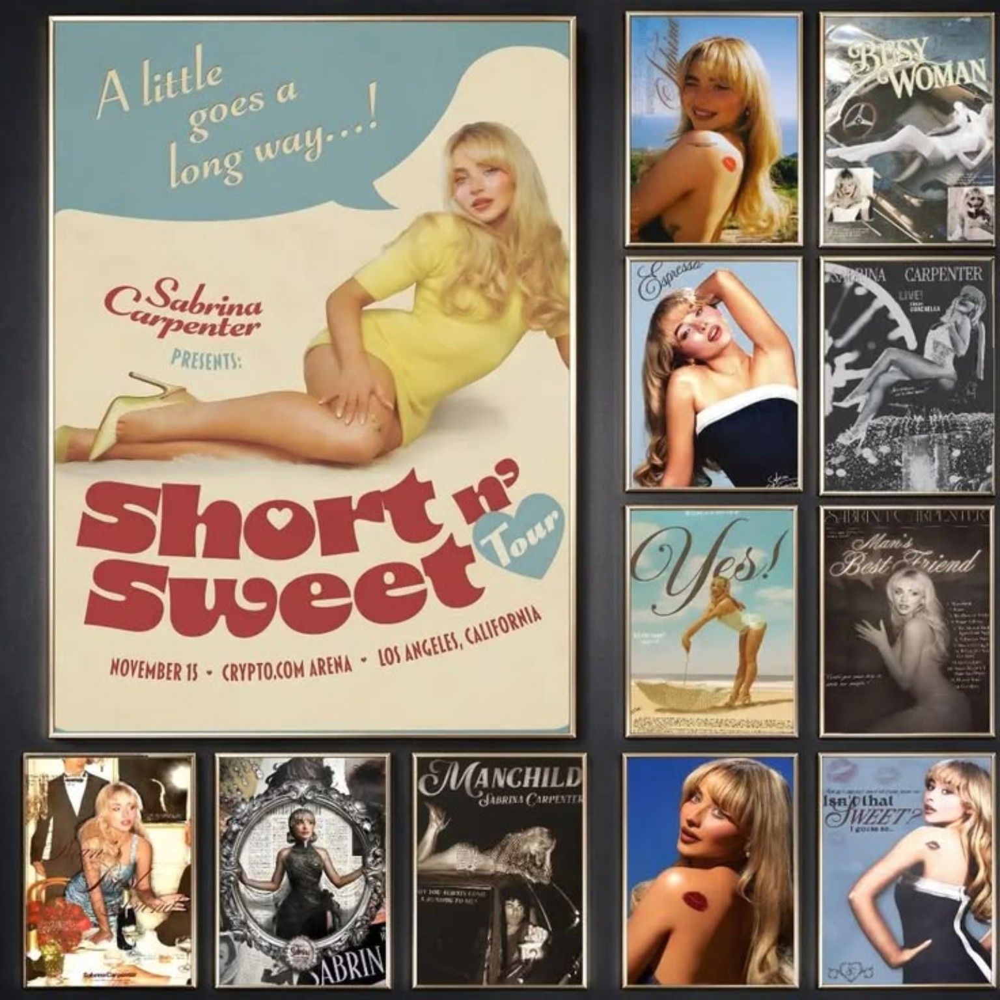
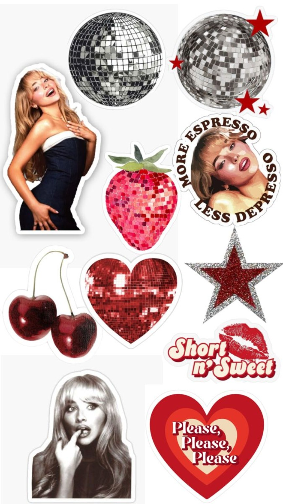
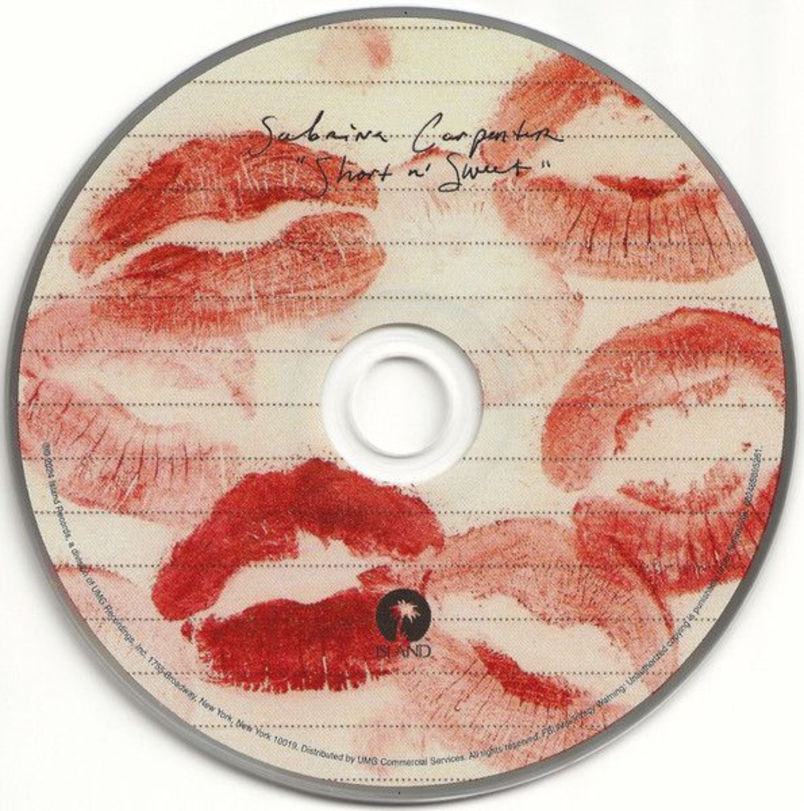

✦ WELCOME TO THE SWEET SIDE ✦
Short n’
Sweet♡
Uma experiência digital inspirada na estética retrô, romântica e divertida de Sabrina Carpenter.
GET YOUR SWEET PASS ↗Projeto acadêmico não oficial · nenhum ingresso real é emitido

& TELL ♡
01 / THE SWEET EXPERIENCE
A LITTLE
goes a long
WAY!
Crie uma credencial personalizada, receba um QR Code, faça o check-in demonstrativo e desbloqueie um ingresso comemorativo em PDF.

THE MOODBOARD
Sweet little details.




02 / SIGN UP, SWEETHEART
YOUR SWEET PASS.
Preencha seus dados para criar seu ingresso digital comemorativo.
03 / YOUR DIGITAL SOUVENIR
YOUR GOLDEN TICKET.

SABRINA CARPENTER / SHORT N’ SWEET
FAN EXPERIENCE · NÃO OFICIALO PDF só é liberado depois do check-in. Se a biblioteca de PDF não carregar, o navegador oferece a opção de salvar como PDF.
04 / CHECK-IN TIME
PLEASE,
PLEASE, CHECK IN!
Valide seu código para confirmar sua participação e liberar o ingresso comemorativo em PDF.
